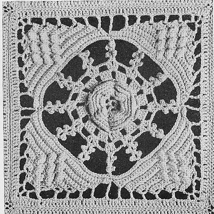

Bed of Roses - Free Crochet Pattern MATERIALS: Use one of the following threads: CLARK'S O.N.T. LUSTERSHEEN, 34 skeins of White or Ecru, or 45 skeins of any color for single size spread; 43 skeins of White or Ecru, or 57 skeins of any color for double size spread. J. & P. COATS KNIT-CRO-SHEEN, 45 balls of White or Ecru, or 54 balls of any color for single size spread; 57 halls of White or Ecru, or 68 bails of any color for double size spread. MILWARD'S steel crochet hook No. 5 or 6. GAUGE: Each block measures 61/4 inches square. For a single size spread, about 72 x 108 inches, make 11 x "1.7 blocks. For a double size spread, about 92 x 108 inches, make 14 x 17 blocks. BLOCK: Ch 8, join with sl st. 1st rnd: Ch 6, *dc in ring, ch 3. Repeat from* 4 more times: Join to 3rd st of ch-6 (6 sps). 2nd rnd: In each sp make sc, half dc, 2 dc, half dc and sc (6 petals). 3rd rnd: * Ch 4, sc in dc of 1st rnd (between petals). Repeat from * around. Ch 4, join. 4th rnd: In each loop make sc, half dc, 3 dc, half dc and sc. 5th rnd: * Ch 5, sc in back loop of sc of 3rd rnd. Repeat from * around. 6th rnd: Same as 4th rnd, making 4 dc instead of 3 dc. 7th rnd: Same as 5th rnd, making ch-6 loops. 8th rnd: Same as 4th rnd, making 6 dc instead of 3 dc. 9th rnd: * Ch 3, sc between 3rd and 4th dc at back of next petal, ch 3, sc in back loop of next sc. Repeat from * around. Sl st in 1st ch-3 loop. 10th rnd: Ch 3, 3 dc in same place as sl st, * ch 2, 4 dc in next sp. Repeat from* around; join. 11th rnd: Sl st in next 3 dc, sl st in sp, ch 3, dc in same sp* (ch 5, sc in 4th ch from hook, thus making a p (picot)) 3 times; sc in ch between 1st 2 p's, p, ch 1, sc in ch between 1st p and last dc, 2 dc in same sp as last dc, ch 3, 2 dc in next ch-2 sp. Repeat from * around, ending with 2 dc in same place as last dc, ch 3, sl st in 3rd st of ch-3 first made. Fasten off. 12th rnd: Attach thread between 2nd and 3rd p's of 1st p-loop, * ch 11, sc between 2nd and 3rd p's of next p-loop. Repeat from * around. 13th rnd: Sc in each ch and in each sc around. Ch 1, turn. Work is now done in rows instead of rnds, picking up only the back loop of each sc. 1st row: Sl st in 1st sc, sc in next 35 sc. Ch 2, turn. 2nd row: Skip 2 sc, sc in next 15 sc, pc st in next sc-to make a pc st, ch 1, make 5 dc in st, remove hook, insert hook back in ch-1 and draw dropped loop through, ch 1 to fasten. Sc in next 15 sc. Ch 2, turn. 3rd row: Skip 2 sc, sc in each st across. Ch 2, turn. 4th row: Skip 2 sc, sc in next 11 sc, pc st in next sc, sc in next 3 sc, pc st in next sc, sc in next 11 sc. Ch 2, turn. 5th row: Same as 3rd row. 6th row: Skip 3 sc, sc in next 6 sc, pc st in next sc; (sc in next 3 sc, pc st in next sc) twice; sc in next 7 sc. Ch 2, turn. 7th row: Same as 3rd row, but skip 3 sc (instead of 2 sc). 8th row: Skip 3 sc, sc in next 5 sc, pc st in next st, sc in next 3 sc, pc st in next sc, sc in next 6 sc. Ch 2, turn. 9th row: Same as 7th row. 10th row: Skip 3 sc, sc in next 4 sc, pc st in next sc, sc in next 5 sc. Ch 2, turn. 11th row: Skip 2 sc, sc in next 6 sc. Ch 5, turn. 12th row: Skip 5 sc, sc in next sc. Fasten off. With wrong side of work toward you, skip sc at tip of p-loop, attach thread and work over next 35 sc. Turn and work as for first corner. Continue in this manner until 4 corners are made. Fasten off. Now work in rnds as follows: 1st rnd: Attach thread in corner loop, ch 5, dc in same loop, ch 2, dc in same loop. * (Ch 3, dc in next turning ch) 4 times; ch 3, tr in next turning ch, ch 3, d tr in sc directly above p-loop, ch 3, tr in next turning ch; (ch 3, dc in next turning ch) 4 times; ch 3, in corner ch-5 loop make dc, ch 2, dc, ch 2 and dc. Repeat from * around. Join last ch-2 to 3rd st of ch-5 first made. 2nd rnd: Ch 3, dc in next 2 ch, 3 dc in next dc, dc in each st around, making 3 dc in center dc at corners. Fasten off. Make necessary number of blocks and sew together on wrong side with neat over-and-over stitches.  HOME |